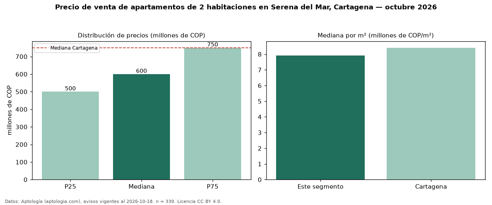

Precio de venta de apartamentos de 2 habitaciones en Serena del Mar, Cartagena — octubre 2026
En Serena del Mar, Cartagena, la mediana de precio de venta de apartamentos de 2 habitaciones es COP 600 millones, según 339 avisos vigentes. Eso es 20 % por debajo de la mediana de Cartagena para apartamentos de 2 habitaciones (COP 750 millones). Por metro cuadrado, la mediana es COP 7,93 millones/m² (n = 330 avisos con área), 6 % por debajo de Cartagena (COP 8,41 millones/m²). Son 64 % de los 533 avisos de apartamentos en venta de la zona, cuya mediana general es COP 630 millones (−5 %). Con el precio por m² de arriendo del mismo segmento (COP 43.529/m² al mes), la rentabilidad bruta implícita es 6,6 % anual (aproximación con medianas de ofertas distintas). El área mediana anunciada es 76 m². La administración mediana declarada es COP 532.000 al mes (n = 234). El estrato más frecuente es 5 (44 % de los avisos con estrato). Datos: Aptología (aptologia.com), CC BY 4.0 — https://www.aptologia.com/venta/cartagena/serena-del-mar. Archivos: PDF, CSV con las cifras y gráfica PNG.

| Avisos únicos | 339 |
|---|---|
| Percentil 25 | COP 500.000.000 |
| Mediana | COP 600.000.000 |
| Percentil 75 | COP 750.000.000 |
| Mediana por m² | COP 7.925.920 |
Fuente: avisos vigentes de portales inmobiliarios recopilados por Aptología, deduplicados (mínimo 30 avisos únicos por celda). Precios pedidos, no cerrados. Fecha: 2026-10-18.